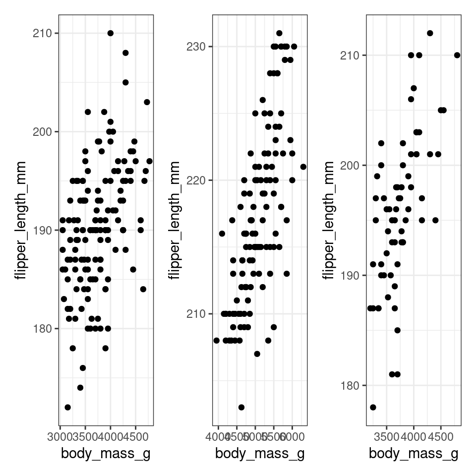

Chapter 18 Bonus: Simulation
library(ggplot2)
# Define a function to run the simulation for a given sample size and effect size
simulate_difference <- function(sample_size, effect_size) {
set.seed(123)
# Initialize a data frame to store the estimated differences
results <- data.frame(Simulated_Difference = numeric(100))
for (i in 1:100) { # Perform 100 simulations for the fixed sample size
# Generate data for two groups with a specified effect size
group1 <- rnorm(sample_size, mean = 0, sd = 1)
group2 <- rnorm(sample_size, mean = effect_size, sd = 1)
# Create a data frame for the two groups
data_df <- data.frame(Group = rep(c("Group1", "Group2"), each = sample_size),
Value = c(group1, group2))
# Fit a linear model to estimate the difference in means
lm_model <- lm(Value ~ Group, data = data_df)
# Extract the estimated difference from the model
estimated_difference <- coef(lm_model)[2]
results$Simulated_Difference[i] <- estimated_difference
}
# Return the data frame of estimated differences
return(results)
}
# Fixed sample size of 20
sample_size <- 30
# Set the effect size
effect_size <- .8 # Adjust as needed
# Run the simulation for the fixed sample size
simulation_results <- simulate_difference(sample_size, effect_size)
# Calculate the mean and 2.5th and 97.5th percentiles for the confidence interval
mean_difference <- mean(simulation_results$Simulated_Difference)
lower_percentile <- quantile(simulation_results$Simulated_Difference, 0.025)
upper_percentile <- quantile(simulation_results$Simulated_Difference, 0.975)
# Create a density histogram of the estimated differences with lines for percentiles
ggplot(simulation_results, aes(x = Simulated_Difference)) +
geom_histogram(binwidth = 0.05, fill = "lightblue", color = "black") +
geom_vline(aes(xintercept = mean_difference), color = "red", linetype = "dashed") +
geom_vline(aes(xintercept = lower_percentile), color = "blue") +
geom_vline(aes(xintercept = upper_percentile), color = "blue") +
labs(x = "Estimated Difference", y = "Density") +
ggtitle(paste("Density Histogram of Estimated Differences (Sample Size = 20)")) +
theme_minimal()
# Define a function to run the simulation for a given sample size and effect size
simulate_power <- function(sample_size, effect_size) {
set.seed(123)
# Initialize a counter for the number of significant t-tests
num_significant <- 0
for (i in 1:100) { # Perform 100 simulations for each sample size
# Generate data for two groups with a specified effect size
group1 <- rnorm(sample_size, mean = 0, sd = 1)
group2 <- rnorm(sample_size, mean = effect_size, sd = 1)
# Create a data frame for the two groups
data_df <- data.frame(Group = rep(c("Group1", "Group2"), each = sample_size),
Value = c(group1, group2))
# Fit a linear model to estimate the difference in means
lm_model <- lm(Value ~ Group, data = data_df)
# Extract the p value from the model
# Check if the null hypothesis is rejected (p-value < 0.05)
if ( broom::tidy(lm_model)[[2,5]] < 0.05) {
num_significant <- num_significant + 1
}
}
# Return the proportion of significant t-tests (power)
return(num_significant / 100)
}
# Specify a range of sample sizes to test
sample_sizes <- c(10, 20, 30, 40, 50, 60, 70, 80, 90, 100)
# Set the effect size
effect_size <- 1 # Adjust as needed
# Run the simulation for each sample size
simulation_results <- map_dbl(sample_sizes, simulate_power, effect_size)
# Plot the power as a function of sample size
plot(sample_sizes, simulation_results, type = "b", xlab = "Sample Size", ylab = "Power", main = "Power vs. Sample Size")
18.1 Further Reading:
https://bookdown.org/ndphillips/YaRrr/generating-random-data.html
Simulations: https://rstudio-education.github.io/hopr/
https://aosmith.rbind.io/2018/01/09/simulate-simulate-part1/#simulate-simulate-dance-to-the-music
https://aosmith.rbind.io/2019/07/22/automate-model-fitting-with-loops/
https://aosmith.rbind.io/2017/12/31/many-datasets/#list-all-files-to-read-in
## R version 4.3.1 (2023-06-16)
## Platform: x86_64-pc-linux-gnu (64-bit)
## Running under: Ubuntu 20.04.6 LTS
##
## Matrix products: default
## BLAS: /usr/lib/x86_64-linux-gnu/atlas/libblas.so.3.10.3
## LAPACK: /usr/lib/x86_64-linux-gnu/atlas/liblapack.so.3.10.3; LAPACK version 3.9.0
##
## locale:
## [1] LC_CTYPE=C.UTF-8 LC_NUMERIC=C LC_TIME=C.UTF-8
## [4] LC_COLLATE=C.UTF-8 LC_MONETARY=C.UTF-8 LC_MESSAGES=C.UTF-8
## [7] LC_PAPER=C.UTF-8 LC_NAME=C LC_ADDRESS=C
## [10] LC_TELEPHONE=C LC_MEASUREMENT=C.UTF-8 LC_IDENTIFICATION=C
##
## time zone: UTC
## tzcode source: system (glibc)
##
## attached base packages:
## [1] stats graphics grDevices utils datasets methods base
##
## other attached packages:
## [1] patchwork_1.1.2 testthat_3.1.10 palmerpenguins_0.1.1
## [4] microbenchmark_1.4.10 knitr_1.43 webexercises_1.1.0
## [7] glossary_1.0.0 lubridate_1.9.2 forcats_1.0.0
## [10] stringr_1.5.0 dplyr_1.1.2 purrr_1.0.1
## [13] readr_2.1.4 tidyr_1.3.0 tibble_3.2.1
## [16] ggplot2_3.4.2 tidyverse_2.0.0
##
## loaded via a namespace (and not attached):
## [1] gtable_0.3.3 xfun_0.39 bslib_0.5.0 tzdb_0.4.0
## [5] vctrs_0.6.3 tools_4.3.1 generics_0.1.3 fansi_1.0.4
## [9] highr_0.10 pkgconfig_2.0.3 desc_1.4.2 lifecycle_1.0.3
## [13] compiler_4.3.1 farver_2.1.1 brio_1.1.3 munsell_0.5.0
## [17] codetools_0.2-19 htmltools_0.5.5 sass_0.4.6 yaml_2.3.7
## [21] pillar_1.9.0 jquerylib_0.1.4 cachem_1.0.8 tidyselect_1.2.0
## [25] digest_0.6.33 stringi_1.7.12 bookdown_0.34 labeling_0.4.2
## [29] rprojroot_2.0.3 fastmap_1.1.1 grid_4.3.1 colorspace_2.1-0
## [33] cli_3.6.1 magrittr_2.0.3 utf8_1.2.3 broom_1.0.5
## [37] withr_2.5.0 backports_1.4.1 waldo_0.5.1 scales_1.2.1
## [41] timechange_0.2.0 rmarkdown_2.23 hms_1.1.3 memoise_2.0.1
## [45] evaluate_0.21 rlang_1.1.1 downlit_0.4.3 glue_1.6.2
## [49] xml2_1.3.5 pkgload_1.3.2.1 rstudioapi_0.15.0 jsonlite_1.8.7
## [53] R6_2.5.1 fs_1.6.2